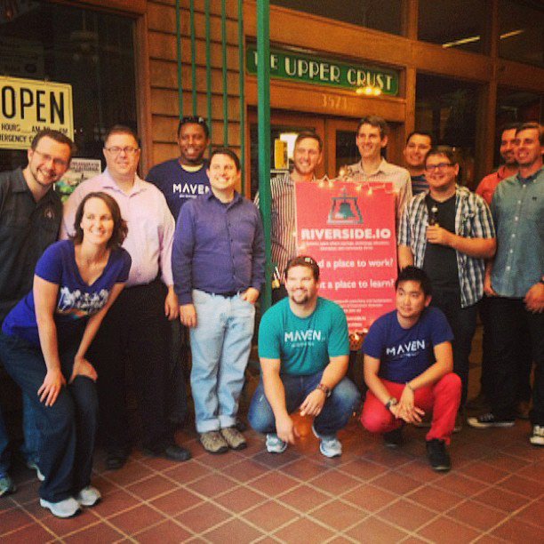
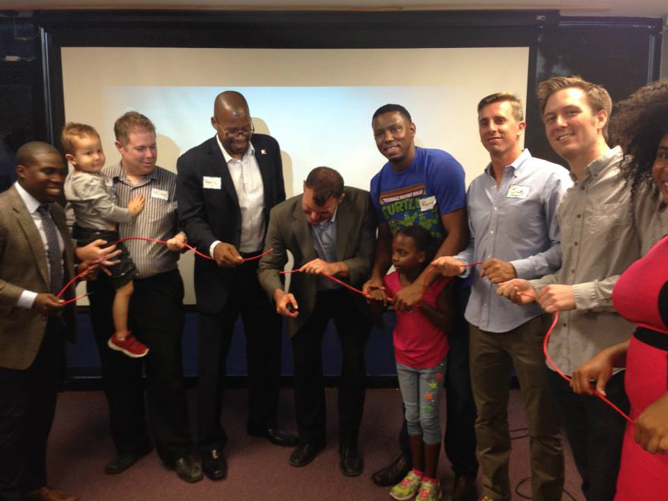

Riverside.io was a dream that became a reality. There was a growing startup scene in Riverside and no home base for it. A group of us were heavily involved in that scene, and so we got together with a goal to start a coworking space.
Mike Kennedy, Jacob Lowe and I took the lead for how we'd go from idea to reality. We began with a weekly 1 hour lunch meeting.
In each of those meetings, we made progress toward our goal - setting up a website, starting an email list, and scouting locations. The vision and progress attracted others and soon we were collecting $100 per month from over 10 individuals. That attracted the City of Riverside to get involved, and within 8 months we had opened Riverside's very first coworking space!
Since then Riverside.io has become the central location for Riverside's growing startup scene. It has outgrown both its first and second locations and continues to grow.
Small businesses and freelancers call it home, weekly meetups are held there, and most importantly great relationships have been built out of it. There's been a number of people involved in making this happen. It's been a great example of the kind of success and good things that can come out of teamwork and collaboration. And here are some links to Riverside.io in the news and other places